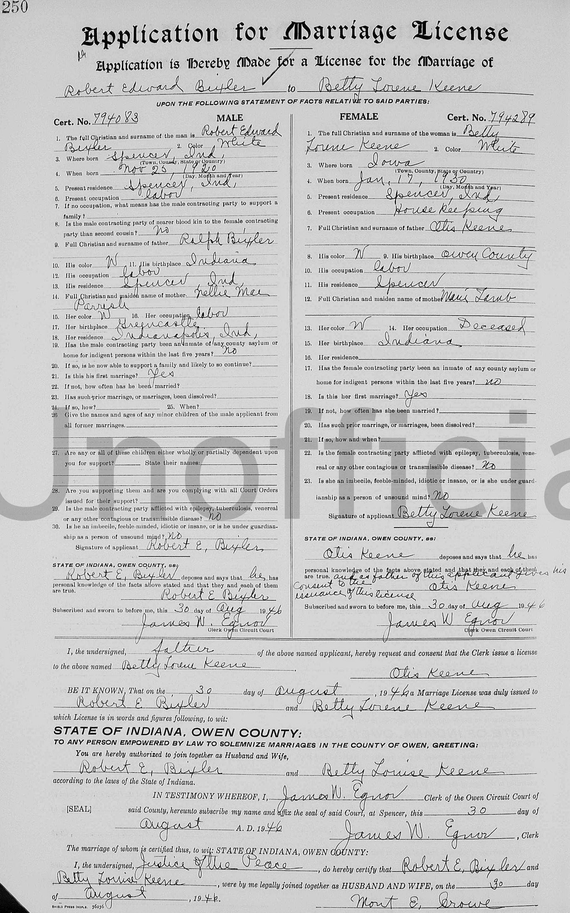
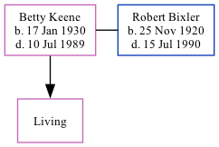

Betty Lourne Bixler (née Keene) 1930 - 1989
[ Home ] | [ Calendar ] | [ Surnames Index ] | [ Family History ]Betty Keene, the wife of Robert Edward Bixler (the fifth cousin once-removed on the mother's side of Nigel Horne), was born in Burlington, Des Moines, Iowa, USA on Jan 17, 19301,2,3 and. She married Robert (a carpenter with whom she had 1 surviving child) in Owen, Indiana, USA around Sep 19462.
She died on Jul 10, 1989 in Indiana1,3.
Citations
- Social Security Death Index - Findmypast
- United States Marriages - Findmypast
- United States Obituary Notices - Findmypast
Media
Robert Bixler - Betty Keene - marriage licence

Social Security Death Index - USBMD/SSDI/312282918
Indiana Marriages 1811-1959 Transcription - R_75588258
United States Marriages Transcription - FS-MAR-34122406-1
United States Obituary Notices - US/TRIB/035751458
Family Tree
Generated by ged2site. Last updated on Nov 13, 2024